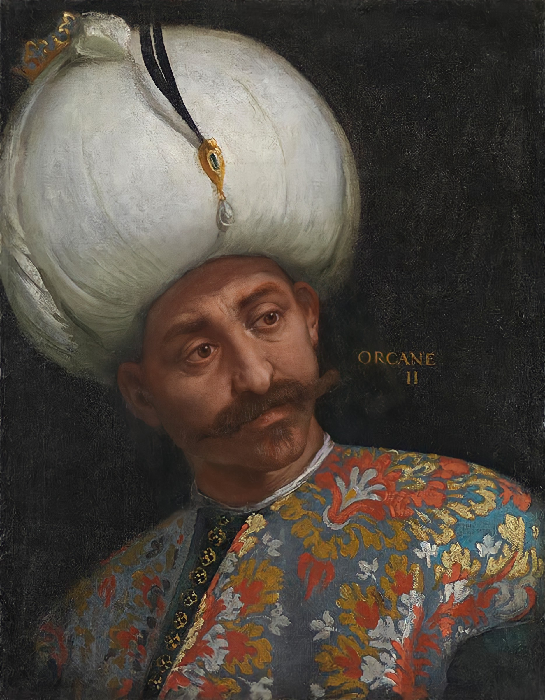

| önceki |  |
sonraki |
Orhan Gazi veya Orhan Bey (Osmanlıca: اورخان غازی; d. y. 1281, Söğüt - ö. Mart 1362. Bursa), Osmanlı İmparatorluğu'nun ikinci padişahıdır. 1324 ile 1362 yılları arasında hüküm sürmüştür. Babası Osman Gazi'den 16.000 km² olarak aldığı beyliği, oğlu I. Murad'a 95.000 km² ila 100.000 km² arsa bıraktığı biliniyor.
Osmanlı Beyliği'nin kurucusu Osman Gazi ve Malhun Hatun'un oğludur. Sarışın, uzun boylu ve mavi gözlü, halk tarafından çok sevilen, ulemaya saygılı, merhametli bir hükümdar olarak tanımlanır. Sık sık halkın arasına karıştığı ve dertlerini dinlediği söylenir. Babası Osman Gazi'nin vefatı üzerine 1326'da bey olmuştur. Orhan Bey'e Şücaeddin, "İhtiyareddin" ve "Seyfeddin" unvanları verilmiştir. Ölüm tarihini 1359, 1360, 1361 ve 1362 gösteren kaynaklar da vardır.[2][3]
"Sultan" unvanını kullanan ilk Osmanlı padişahının I. Murad olduğu kabul edilmektedir; lakin bazı kaynaklar Orhan Bey'i "sultan" unvanını kullanan ilk Osman padişahı olarak kabul etmektedir. Hatta, onun adına darb edilen sikkede "Sultan-ı Azam Orhan Bey" yazılmaktadır; ve üstelik, Orhan Bey'e ait olan bir tuğrada "Sultan Orhan" yazılmaktadır.[11] Hatta İbn-i Batuta, Osman Gazi'yi "ilk sultan" olarak adlandırmaktadır.[12][13]
Bey olmadan yaşamı ve bey olması
Menâkıb-ı Orhânî adlı çağdaş kroniğe göre, Orhan Bey 1280/1281 yılında doğmuş ve 80 yıl yaşamıştır. Daha sonraki kaynakların bir kısmında doğum tarihi 1281 olarak verilmekle beraber, doğum tarihini 1274, 1279, 1287 olarak veren kaynaklar vardır.
Osmanoğullarının en uzun ömürlüsü olan Orhan Bey'in çocukluğu ve gençliği bilinmemektedir. Nasıl yetiştiği, nasıl eğitim aldığı, hatta okur yazar olup olmadığı bilinmemektedir. Osmanlı tarihlerinde adının ilk geçişi 1298'de Nilüfer Hatun (Yarhisar Tekfuru kızı Holofira) ile evlendirilmesi nedeniyle olmuştur. 1300'de Köprühisar'ın fethinde bulunmuş ve Karacahisar uç beyliği verilmiştir. Osman Bey oğlunu emir-i kebir (beylerbeyi) rütbesi ile küçük beylik ordusuna komutan atamış ve bundan sonraki babasının her askerî eylemine katılmıştır.
İlk meydan savaşı Çavdarlı Tatara karşı olan Oynaş Hisarı Muharebesidir. Bundan sonra Karaçepüş, Absu, Karatekin, Orhaneli gibi kaleleri feth etmiştir.
Beyliğe babasının sağlığında mı yoksa ölümünden sonra mı geçtiği konusu tartışmalıdır.
Bizans tarihçisi Laonikos Halkokondiles, kaynak göstermeden, babası ölünce oğlu Orhan'ın Uludağ'a çekildiğini ve sonra yanına asker toplayarak kardeşlerini alt ettiğini bildirir.
Osmanlı'nın ilk tapu senedini Miladi 1301 yılında Orhangazi; Şeyh İzzeddin İsmail'e Sakarya Akova'daki Çalıca ve Şehler Köyü vakıf tapusunu vermiştir.
Orhan Gazi'ye bey olduktan sonra "Şücaeddin", "İhtiyareddin" ve "Seyfeddin" sanları verilmiştir. Adına tuğra çekilen ilk Osmanlı beyidir.
Anadolu'da fetihler
Orhan Bey'in beylik yıllarının ilk dönemi Anadolu'da fetihlerle geçmiştir. Beyliği sırasında bütün diğer Anadolu beylikleri gibi İran'da kurulu İlhanlılar'ı metbu sayıp yıllık vergi ödemeye devam etmiştir. Diğer yandan da Bizans topraklarına yönelik akınlar ve fetihlerle Osmanlı Beyliği daha güç kazanmıştır.[2][3]
Orhan Bey 1321'de Mudanya'yı fethederek beyliğini Marmara Denizi kıyısına ulaştırmıştır. 1323 yılında Gebze'de kendi adında camii yaptırmıştır. 1321 ve 1326'ya kadar Gazi komutanlar emri altında Osmanlı beylik birlikleri beylik sınırlarına sevkedilmiş; Konur Alp Batı Karadeniz dolaylarına, Akça Koca İzmit dolaylarına, Abdurrahman Gazi Yalova (Yalakabad) dolaylarına akınlar yaparak Yalova, Akyazı, Mudurnu, Pazaryeri (Ermenipazarı), Sapanca (Ayangölü), Kandıra, Samandra fetihleri yapılmıştır.[2][3]
1326'da hedef, bölgenin en büyük merkezi olan ve yıllardır abluka altında tutulan Bursa kenti olmuştur. Önce Orhaneli (o zaman Adranos) kalesi alınmış ve yıkılmış; sonra Bursa hisarını kuşatmak üzere Pınarbaşı mevkiinde karargâh kurulmuştur. Fakat Köse Mihal Bey'in diplomatik çabaları sonucu kale muhafızı Evranos kaleyi savaşsız teslim etmiştir. Köse Mihal Bey ve Evranos Bey'in Müslüman olup Orhan Bey'in hizmetinde akıncı beyleri olarak görev yapmaları ve bu misyonu kendi soydaşlarına devretmeleri Osmanlılık kimliği yaratma siyasetinin ilk başarılı sonuçlarıdır. Bir vekayiname Bursa alınışını 2 Cemazievvel 726 (6 Nisan 1326) olarak vermektedir. Fakat elde bulunan bazı, Orhan Gazi adına Bursa'da basılı olduğu gösterilen akçe sikkeleri daha önceki tarihleri göstermektedir. Genel olarak Osmanlı tarihçiler Bursa'nın alınması ile Orhan Gazi tarafından başkent yapıldığını bildirirler.[2][3][15]
Sonraki yıllarda Orhan Bey'in gazi komutanları akıncıları ile Kocaeli topraklarında ilerlemişler; Kartal ve Aydos kalelerini fethetmişler ve Boğaz kıyılarında görülmüşlerdir.
Mayıs 1329'da Bizans imparatoru olan III. Andronikos ve yakın danışmanı (sonra imparator olan) İoannis Kantakuzinos 2.000 paralı asker ile takviyeli bir Bizans ordusu ile Kocaeli'nde ilerlemiş; İzmit kuşatması yapan ise Orhan Gazi ivedi yürüyüşle Darıca üzerinden gelmiş; ve ilk defa bir meydan savaşı olarak Bizans ve Osmanlı orduları 11 Haziran 1329'da Maltepe (Palekanon) Savaşı'na girişmişlerdir. Bu savaşta Bizans ordusu Osmanlı ordusuna yenik düşüp bozguna uğramış ve Bizans İmparatoru III. Andronikos yaralı olarak kurtulmuştur. Böylece III. Andronikos'un Bizans Anadolu topraklarını geri alma planları suya düşmüştür ve Bizanslılar bir daha böyle planlara girişmemişlerdir.[2][3][16]
Orhan Bey'in bu askerî zaferi sonucu olarak bütün Hristiyanlar için ana itikat prensibi sağlayan "Nicea İtikadı"'nin 325'te kabul edildiği şehir olan ve Bizans Konstantinopolis'i Latinlerin elinden alıp kurtaran İznik İmparatorluğu'nun başkenti olmuş olan İznik (Nicea) 2 Mart 1331'de hiç direniş görünmeden fethedilmiştir.[17] Orhan Bey ve yakınları tarafından yapılan imar çalışmaları çok kısa bir zamanda İznik bir Osmanlı kültür, ticaret ve sanat merkezi olan bir İslam şehrine döndürmüştür. Özellikle Orhan Bey İznik büyük katedralini camiye ve bir manastırı medreseye çevirtmiş; eşi Nilüfer Hatun bir imaret yaptırmış; oğlu Süleyman Paşa ise yeni bir medrese yaptırmıştır.[18]
Orhan Gazi fetihlerine İznik'in fethinden sonra da devam etmiş; o zamanki Karesi Beyliği ile birleşip, 1345'de Balıkesir ve Edremit, 1347'de Karesi kalesi, 1348'de Çanakkale Boğazı'nın Asya kıyısındaki, Girit, 1350'de Savaştepe, 1351'de Truva (İlios), 1352'de Çanakkale Boğazı, 1354'de Karesi Beyliği toprakları, 1357'de Manisa ve Akhisar, 1359'da Bergama ve Ege Denizi kıyısındaki tüm Karesi topraklarını fethetmiştir.[2][3]
Orhan Bey'in devlet yapısını kurması
Orhan Bey devleti kurarken, ağa ve sipahi olarak adlandırdığı iki sınıf oluşturmuştur. Bu iki sınıf askeri ve malî yükümlülükleri olan sınıflardır. Sipahi (sahip) tarım arazisi üzerinde savaşa giden bir askerdir. Devlet, askerlik hizmetinde bulunan her askere bu arazinin ve mal varlığının yüzde onunu vermiştir. Ağa ise köyün veya kasabanın yöneticisidir. Askeri ve idari işlevleri bulunmaktaydı. Orhan Bey, ilk padişahlık döneminde, düzenli bir ordu kurmuş ve bu düzenli ordu, aynı zamanda devlete vergi ödeyen ve tarım yapan köylülerden oluşmaktadır.[19][20][21]
İlk vezir unvanına sahip olan Sırp asıllı olan Alaeddin Paşa, ilk defa devlet memurluğu kavramını uygulamış ve devlete memurlar almıştır.[19][20][21]
Kültürel gelişmeler
Orhan Bey döneminde de devlet kültür ve medeniyet bakımından önemli bir gelişme göstermiştir. İlk Osmanlı camiinin inşası olan "Ağa Camii", ilk medrese olan "İznik Medresesi" ve ilk imaret olan "İznik İmareti" de bu dönemde inşa edilmiştir. Ayrıca, Osmanlılar'da Arap ve Fars edebiyatı ve özellikle Türk edebiyatı etkilenmeye başlamıştır.[19][20][21]
Aile ve çocukları
Orhan Gazi'nin ilk eşi Malhun Hatun, Osman Gazi'nin 1270 yılında Bursa'da sahip olduğu bir kölenin kızıdır. Malhun Hatun'dan 4 çocuğu olmuştur: I. Murad, İbrahim, Ayshe ve Kız Hatun.[22][23][24]
Orhan Gazi'nin ikinci eşi ise Nilüfer Hatun'dur. Karesi Beyliği'nin "Yarhisar Tekfuru" olan Radu'nun kızı Holofira'dır. Evlilikleri sırasında da 4 çocukları olmuştur: Süleyman Paşa, Mehmed, Orhan ve Fatma.[22][23][24]
Ölümü
Orhan Gazi 1362'de, Bursa'da vefat etti ve oğlu I. Murad tahta geçti. Mezarı Bursa'da, Emirsultan Camii'nin yanında bulunan Orhan Gazi Türbesi'ndedir.
Ailesi
- Eşleri:
- Nilüfer Hatun (Valide Sultan) - Yarhisar tekfurunun kızı, I. Murad, Süleyman Gazi ve Şehzade Kasım'ın annesi
- Asporça Hatun - Bizans İmparatoru II. Andronikos'un kızı, Şehzade İbrahim ve Fatma Hatun'un annesi
- Theodora Hatun - Bizans İmparatoru VI. İoannis'un kızı, Şehzade Halil'in annesi
- Eftandise Hatun - Mahmud Alp'in kızı
- Erkek çocukları:
- Süleyman Paşa
- I. Murad
- Şehzade İbrahim
- Şehzade Halil
- Şehzade Kasım
- Kız çocukları:
- Fatma Hatun
Orhan Gazi hakkında daha fazla bilgi için buraya tıklayın.